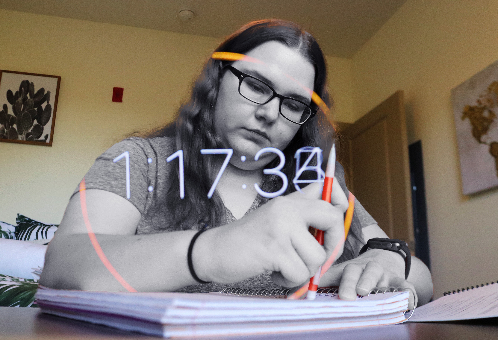
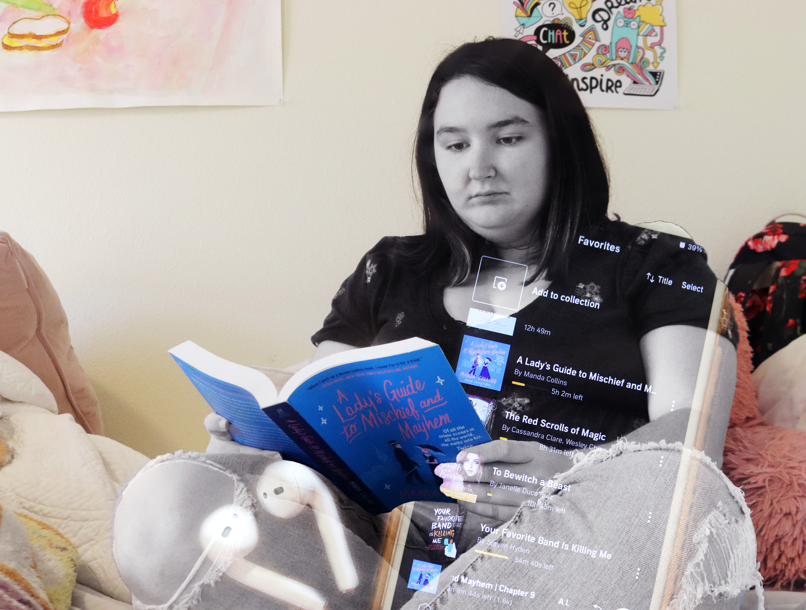
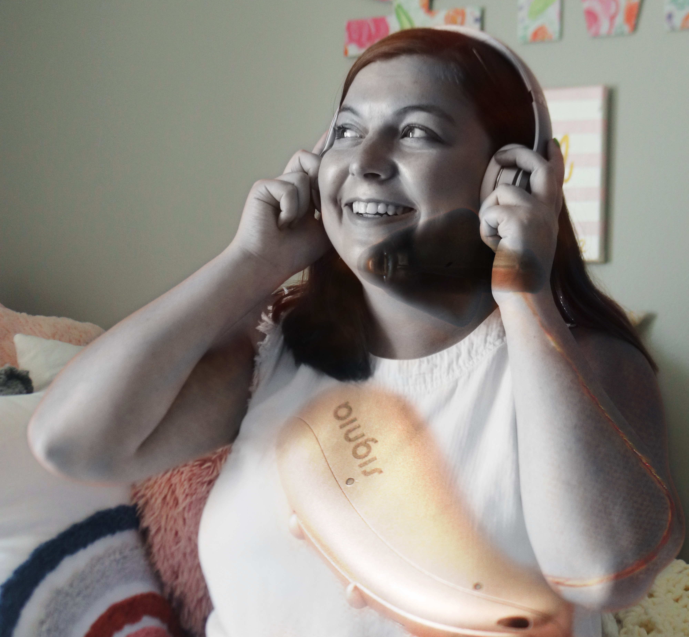

Not all disabilities can be seen. And what helps is often obscure.

“I have bad anxiety, so I get really nervous before I have to do some things. One of those things is taking quizzes and tests. Once in high school, I went to the bathroom and cried because I knew I had failed the test I had just taken. I wasn’t able to finish before time was up. It’s always been that way when taking tests. Recently, I learned that I could get extended time on tests due to my anxiety. I went to the Mizzou disability center and was able to get extended time. I’m so glad I did, because taking tests has been much easier now with more time. I can actually finish my tests now.”
Shelbie Spinner

“I have ADHD, so I take medication for it. It’s not that I’m lazy, it’s just that I have trouble staying focused. So the medication helps me stay focused on super important tasks. I don’t take my medicine all the time, but I do it when I know I have something important to do. When I don’t take it, I want to do everything at once. When I do take it, I’m more likely to do things that I don’t want to do.”

Jessica Kolditz
“I was first diagnosed with dyslexia in fourth grade, and it broke my heart. I remember driving home from school panicking about it. Then the next day, I was going to tell my friends when another girl who had dyslexia pulled me to the side and said ‘You can’t tell others, they’ll think you’re weird.’ The thought of being seen as weird really affected me at the time. So, I didn’t really tell people unless I had to. I would struggle to read along with the class and be embarrassed when I got pulled to go see the dyslexia teacher. My mentality started to change in middle school, when the dyslexia teacher told me that audiobooks could help. And she was right. I am able to follow along with the book and actually process what the text is saying. Using audiobooks also boosted my confidence. I freely tell people that I have dyslexia now, not really caring if they think I’m weird. Being weird just means I’m more myself.”

Gracie Smith
“I have had hearing loss since I was 10 years old from a cholesteatoma. As a child, I didn’t want a hearing aid because I was afraid of the stigma around it. As a journalism major and communicating more than ever during my sophomore year of college, I knew I was needing extra help hearing. I came back from winter break with my new rose gold hearing aid I named “Tink” and reached out to the Mizzou Disability Center for accommodations to help me succeed inside the classroom. Having my hearing aid helps me feel involved in the conversations I felt like an outsider in prior. It also gave me the confidence to fully embrace Disability culture and become a member of the executive board for Mizzou Disability Coalition my junior year.”
Mckenzie Knapp